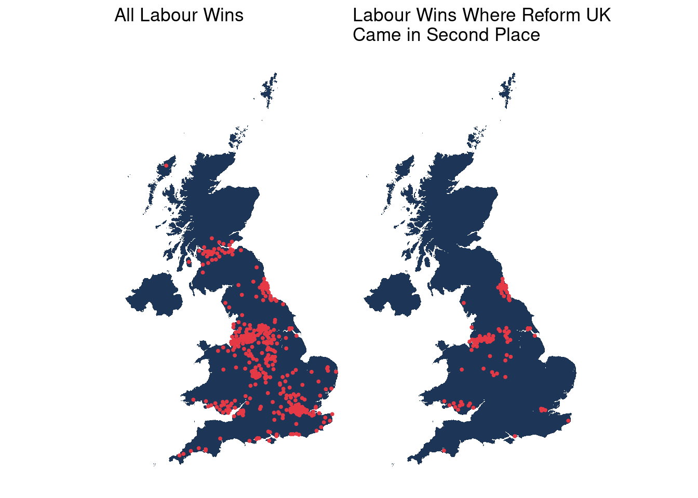
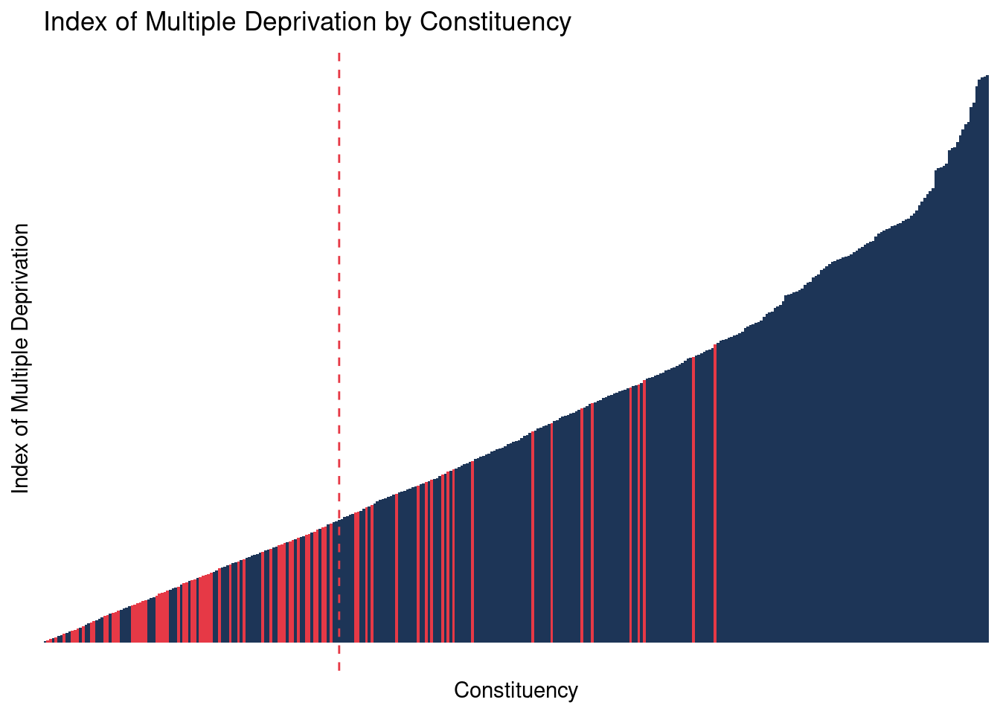

![]()
library(tidyverse)
library(sf)
library(janitor)
library(magrittr)
library(patchwork)
library(readxl)Day 22: 2 Colours
For today’s challenge, I decided to create a simple plot using some political data from the 2024 UK Election. Labour won overall with a large majority of seats, however, Reform UK, despite not winning many seats also performed far more strongly that many predicted. In this map, we look at second place votes within Labour majority areas.
wpc_sf <- st_read("https://services1.arcgis.com/ESMARspQHYMw9BZ9/arcgis/rest/services/Westminster_Parliamentary_Constituencies_July_2024_Boundaries_UK_BGC/FeatureServer/0/query?outFields=*&where=1%3D1&f=geojson")Reading layer `OGRGeoJSON' from data source
`https://services1.arcgis.com/ESMARspQHYMw9BZ9/arcgis/rest/services/Westminster_Parliamentary_Constituencies_July_2024_Boundaries_UK_BGC/FeatureServer/0/query?outFields=*&where=1%3D1&f=geojson'
using driver `GeoJSON'
Simple feature collection with 650 features and 11 fields
Geometry type: MULTIPOLYGON
Dimension: XY
Bounding box: xmin: -8.649996 ymin: 49.86479 xmax: 1.763706 ymax: 60.86078
Geodetic CRS: WGS 84The election data are download from here and read into R.
# Read Election Data and fix column names
ed <- read_csv("HoC-GE2024-results-by-constituency.csv") %>% clean_names()wpc_sf %<>%
left_join(ed, by = c("PCON24CD" = "ons_id"))UK_SF <- st_read("https://services1.arcgis.com/ESMARspQHYMw9BZ9/arcgis/rest/services/Local_Authority_Districts_May_2024_Boundaries_UK_BGC/FeatureServer/0/query?outFields=*&where=1%3D1&f=geojson")Reading layer `OGRGeoJSON' from data source
`https://services1.arcgis.com/ESMARspQHYMw9BZ9/arcgis/rest/services/Local_Authority_Districts_May_2024_Boundaries_UK_BGC/FeatureServer/0/query?outFields=*&where=1%3D1&f=geojson'
using driver `GeoJSON'
Simple feature collection with 361 features and 11 fields
Geometry type: MULTIPOLYGON
Dimension: XY
Bounding box: xmin: -8.649996 ymin: 49.86479 xmax: 1.763706 ymax: 60.86077
Geodetic CRS: WGS 84R_SF <- st_read("https://services1.arcgis.com/ESMARspQHYMw9BZ9/arcgis/rest/services/Regions_December_2023_Boundaries_EN_BGC/FeatureServer/0/query?outFields=*&where=1%3D1&f=geojson")Reading layer `OGRGeoJSON' from data source
`https://services1.arcgis.com/ESMARspQHYMw9BZ9/arcgis/rest/services/Regions_December_2023_Boundaries_EN_BGC/FeatureServer/0/query?outFields=*&where=1%3D1&f=geojson'
using driver `GeoJSON'
Simple feature collection with 9 features and 10 fields
Geometry type: MULTIPOLYGON
Dimension: XY
Bounding box: xmin: -6.418667 ymin: 49.86479 xmax: 1.763706 ymax: 55.81112
Geodetic CRS: WGS 84W_SF <- st_read("https://services1.arcgis.com/ESMARspQHYMw9BZ9/arcgis/rest/services/Countries_December_2023_Boundaries_UK_BGC/FeatureServer/0/query?where=1%3D1&outFields=*&outSR=27700&f=json") %>%
filter(CTRY23NM == "Wales")Reading layer `ESRIJSON' from data source
`https://services1.arcgis.com/ESMARspQHYMw9BZ9/arcgis/rest/services/Countries_December_2023_Boundaries_UK_BGC/FeatureServer/0/query?where=1%3D1&outFields=*&outSR=27700&f=json'
using driver `ESRIJSON'
Simple feature collection with 4 features and 11 fields
Geometry type: MULTIPOLYGON
Dimension: XY
Bounding box: xmin: -116.1928 ymin: 5352.6 xmax: 655653.8 ymax: 1220299
Projected CRS: OSGB36 / British National Grid# Convert to point
wpc_points_sf <- wpc_sf %>%
st_drop_geometry() %>% # Drop existing geometry
st_as_sf(coords = c("BNG_E", "BNG_N"), crs = 27700) %>% # Convert to point SF with British National Grid (EPSG:27700)
select(PCON24CD, PCON24NM, first_party, second_party, lab, ruk,majority) # Keep only the desired columnsNext we will subset those parliamentary constituencies where Labour won, but Reform took second place.
wpc_points_sf <- wpc_points_sf %>%
filter(first_party == "Lab")
wpc_points_RUK_sf <- wpc_points_sf %>%
filter(first_party == "Lab" & second_party == "RUK")all <- ggplot() +
geom_sf(data = UK_SF,color = NA, fill = "#1d3557" ) +
geom_sf(data = wpc_points_sf, color = "#e63946", aes(size = 1)) +
scale_size_continuous(range = c(0, 1)) +
coord_sf(crs = st_crs(27700)) +
theme_minimal() +
theme_minimal() +
theme(
axis.text = element_blank(),
axis.ticks = element_blank(),
axis.title = element_blank(),
panel.grid.major = element_blank(),
panel.grid.minor = element_blank(),
panel.spacing = unit(0, "mm"),
plot.margin = unit(rep(0, 4), "mm"),
plot.background = element_rect(fill = 'white', colour = 'white'),
legend.position = "none"
) + ggtitle('All Labour Wins')
RUK <- ggplot() +
geom_sf(data = UK_SF,color = NA, fill="#1d3557") +
geom_sf(data = wpc_points_RUK_sf, color = "#e63946", aes(size = 1)) +
scale_size_continuous(range = c(0, 1)) +
coord_sf(crs = st_crs(27700)) +
theme_minimal() +
theme_minimal() +
theme(
axis.text = element_blank(),
axis.ticks = element_blank(),
axis.title = element_blank(),
panel.grid.major = element_blank(),
panel.grid.minor = element_blank(),
panel.spacing = unit(0, "mm"),
plot.margin = unit(rep(0, 4), "mm"),
plot.background = element_rect(fill = 'white', colour = 'white'),
legend.position = "none"
) + ggtitle('Labour Wins Where Reform UK\nCame in Second Place')
all + RUK
For those constituency that are in England, we can also a look at these patterns relative to the Index of Multiple Deprivation. First we read in these data and append the IMD values to the election outcomes. We then code a new variable that indicates where Labour won, and where Labour won, but Reform UK came second.
# Read IMD data
IMD <- read_excel("Deprivation-in-English-constituencies.xlsx", skip = 5) %>%
as_tibble() %>%
clean_names()
# Subset to only England WPC and join IMD
wpc_points_sf %<>%
filter(startsWith(PCON24CD, "E")) %>%
left_join(IMD, by = c("PCON24CD" = "constituency_code"))
# Create map variable
wpc_points_sf %<>%
mutate(LAB_RUK = ifelse(first_party == "Lab" & second_party == "RUK", TRUE, FALSE))We can then plot these as a bar chart. The X axis has a bar for each constituency, ordered by their ranked deprived (Y axis). A low score is the most deprived. The dotted line represents the most deprived quintile of the IMD and there is quite an interesting correspondence of where reform have done well in Labour majority areas.
# Create the bar plot with ordering
ggplot(wpc_points_sf, aes(x = fct_reorder(PCON24NM, index_of_multiple_deprivation),
y = index_of_multiple_deprivation, fill = LAB_RUK)) +
geom_bar(stat = "identity",width = 1) +
scale_fill_manual(values = c("TRUE" = "#e63946", "FALSE" = "#1d3557")) +
geom_vline(xintercept = 109, color = "#e63946", linetype = "dashed", size = 0.5) +
labs(
x = "Constituency",
y = "Index of Multiple Deprivation",
title = "Index of Multiple Deprivation by Constituency",
fill = "LAB_RUK"
) +
theme_minimal() +
theme(
axis.text = element_blank(),
axis.ticks = element_blank(),
panel.grid.major = element_blank(),
panel.grid.minor = element_blank(),
plot.background = element_rect(fill = 'white', colour = 'white'),
legend.position = "none"
)